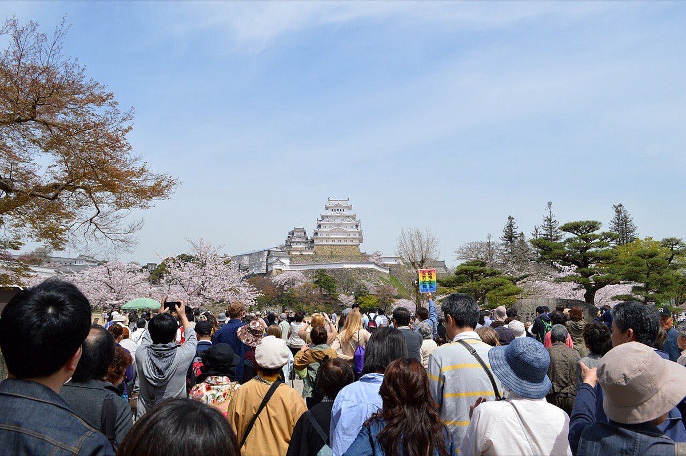
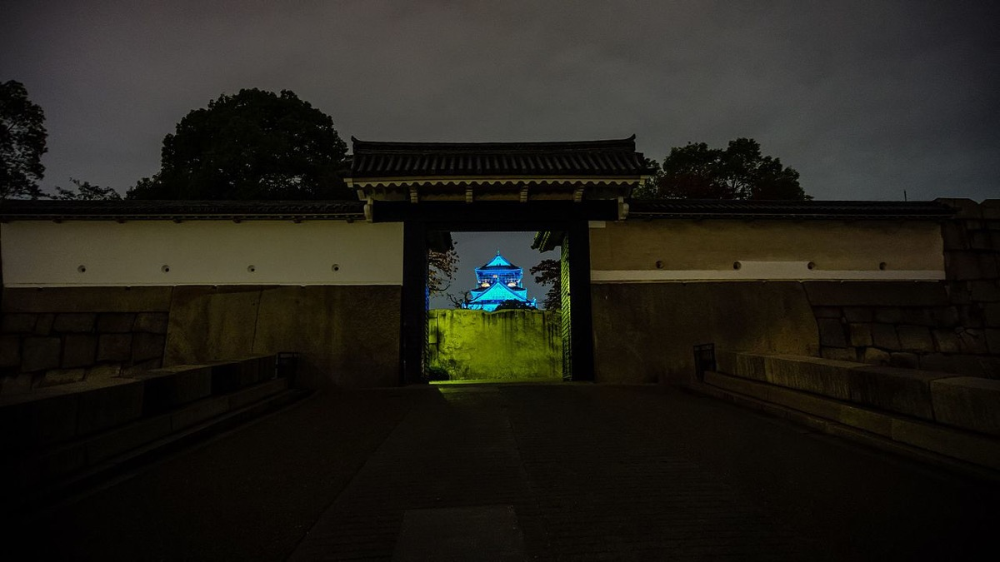

01
Diseño
Itinerario escrito día a día, con tiempos de traslado comprobados y alternativas reales en cada punto donde la decisión cambia el viaje.
001 Consultoría de viajes privados
Sin catálogo, sin comisiones de proveedor y sin paquetes de terceros. Honorarios acordados por escrito y el coste real de cada reserva, a la vista.
002 Mandato
002b Sobre el terreno


003 Términos
Estas cuatro cifras son compromisos, no resultados. No publicamos estadísticas de clientes porque no tenemos forma de que usted las verifique.
004 Proceso
005 Contacto